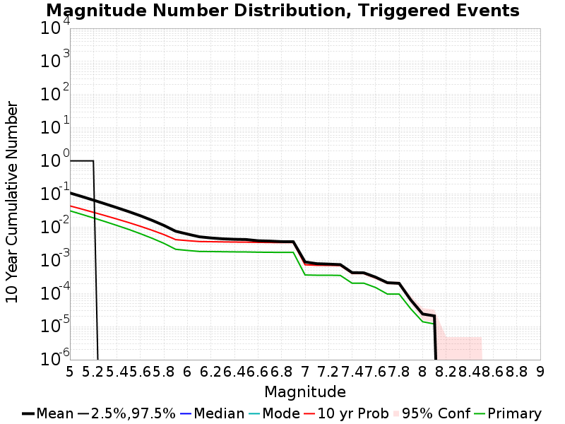
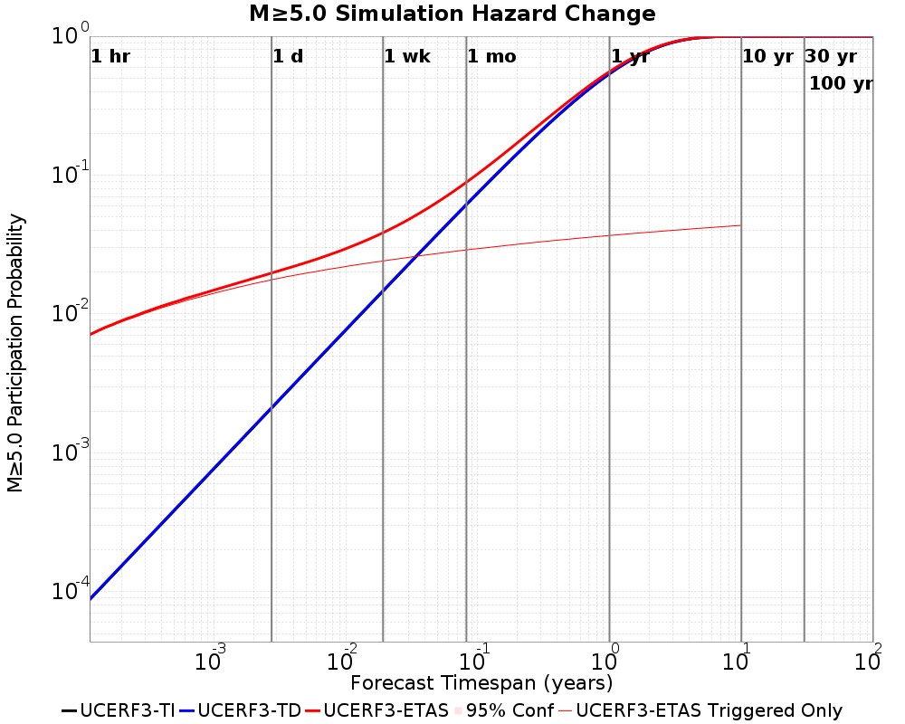
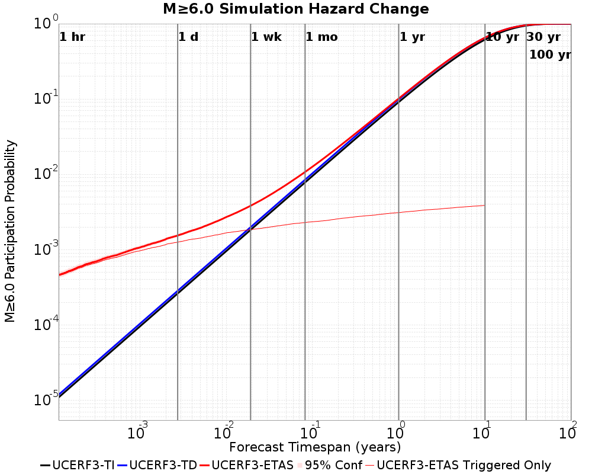
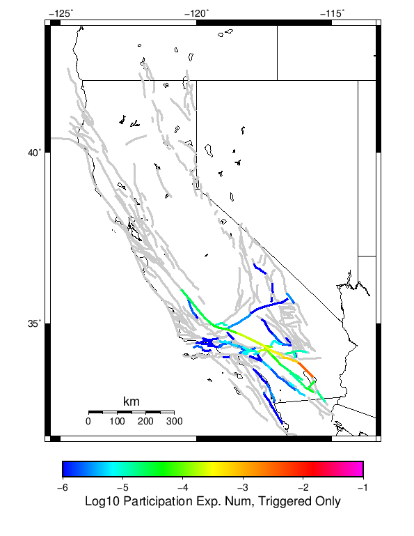
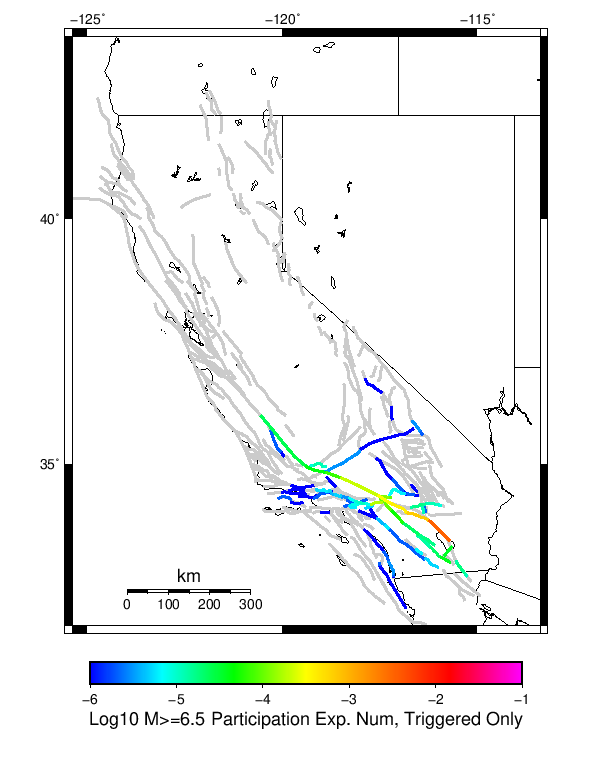
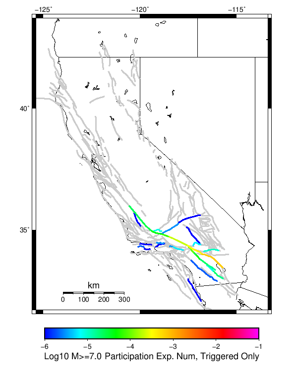
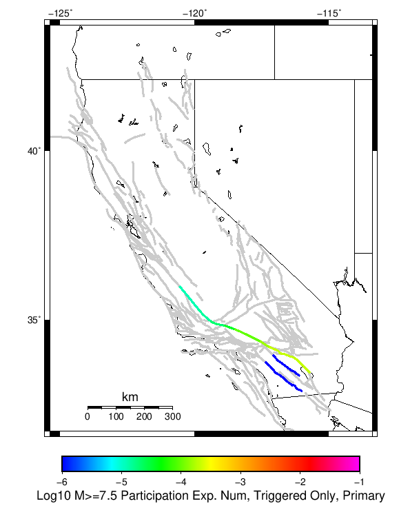
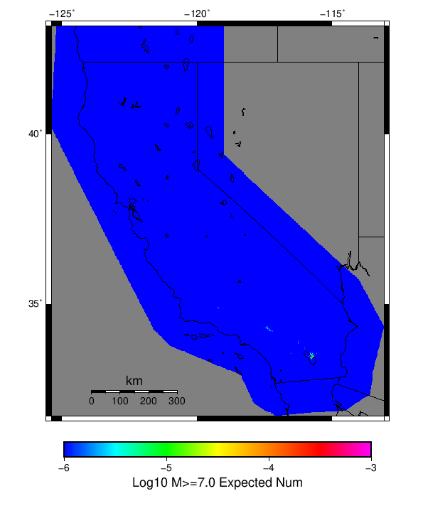

| 2009 Bombay Beach M4.8 | |
|---|---|
| Num Simulations | 500000 |
| Start Time | 2019/01/01 00:00:00 UTC |
| Start Time Epoch Milliseconds | 1546300800000 |
| Duration | 10 Years |
| Includes Spontaneous? | false |
| Historical Ruptures | (none) |
Legend

| Mag | Mean | 2.5 %ile | 97.5 %ile | Median | Mode | 10 yr Probability | Primary Aftershocks Mean |
|---|---|---|---|---|---|---|---|
| M≥5 | 0.118 | 0.000 | 1.000 | 0.000 | 0.000 | 0.044 | 0.031 |
| M≥5.1 | 0.092 | 0.000 | 1.000 | 0.000 | 0.000 | 0.036 | 0.024 |
| M≥5.2 | 0.072 | 0.000 | 1.000 | 0.000 | 0.000 | 0.028 | 0.019 |
| M≥5.3 | 0.055 | 0.000 | 0.000 | 0.000 | 0.000 | 0.023 | 0.015 |
| M≥5.4 | 0.043 | 0.000 | 0.000 | 0.000 | 0.000 | 0.018 | 0.011 |
| M≥5.5 | 0.032 | 0.000 | 0.000 | 0.000 | 0.000 | 0.014 | 8.69E-3 |
| M≥5.6 | 0.024 | 0.000 | 0.000 | 0.000 | 0.000 | 0.011 | 6.41E-3 |
| M≥5.7 | 0.018 | 0.000 | 0.000 | 0.000 | 0.000 | 8.27E-3 | 4.75E-3 |
| M≥5.8 | 0.013 | 0.000 | 0.000 | 0.000 | 0.000 | 6.19E-3 | 3.33E-3 |
| M≥5.9 | 8.68E-3 | 0.000 | 0.000 | 0.000 | 0.000 | 4.55E-3 | 2.31E-3 |
| M≥6 | 7.06E-3 | 0.000 | 0.000 | 0.000 | 0.000 | 4.23E-3 | 2.11E-3 |
| M≥6.1 | 5.79E-3 | 0.000 | 0.000 | 0.000 | 0.000 | 3.99E-3 | 1.99E-3 |
| M≥6.2 | 5.28E-3 | 0.000 | 0.000 | 0.000 | 0.000 | 3.94E-3 | 1.97E-3 |
| M≥6.3 | 4.95E-3 | 0.000 | 0.000 | 0.000 | 0.000 | 3.89E-3 | 1.96E-3 |
| M≥6.4 | 4.79E-3 | 0.000 | 0.000 | 0.000 | 0.000 | 3.85E-3 | 1.94E-3 |
| M≥6.5 | 4.70E-3 | 0.000 | 0.000 | 0.000 | 0.000 | 3.82E-3 | 1.92E-3 |
| M≥6.6 | 4.27E-3 | 0.000 | 0.000 | 0.000 | 0.000 | 3.77E-3 | 1.89E-3 |
| M≥6.7 | 4.16E-3 | 0.000 | 0.000 | 0.000 | 0.000 | 3.73E-3 | 1.88E-3 |
| M≥6.8 | 4.00E-3 | 0.000 | 0.000 | 0.000 | 0.000 | 3.71E-3 | 1.87E-3 |
| M≥6.9 | 3.97E-3 | 0.000 | 0.000 | 0.000 | 0.000 | 3.71E-3 | 1.87E-3 |
| M≥7 | 1.13E-3 | 0.000 | 0.000 | 0.000 | 0.000 | 9.32E-4 | 4.52E-4 |
| M≥7.1 | 9.98E-4 | 0.000 | 0.000 | 0.000 | 0.000 | 9.02E-4 | 4.46E-4 |
| M≥7.2 | 9.78E-4 | 0.000 | 0.000 | 0.000 | 0.000 | 8.94E-4 | 4.46E-4 |
| M≥7.3 | 9.40E-4 | 0.000 | 0.000 | 0.000 | 0.000 | 8.78E-4 | 4.38E-4 |
| M≥7.4 | 5.54E-4 | 0.000 | 0.000 | 0.000 | 0.000 | 5.26E-4 | 2.80E-4 |
| M≥7.5 | 5.44E-4 | 0.000 | 0.000 | 0.000 | 0.000 | 5.18E-4 | 2.80E-4 |
| M≥7.6 | 4.08E-4 | 0.000 | 0.000 | 0.000 | 0.000 | 3.86E-4 | 2.10E-4 |
| M≥7.7 | 2.84E-4 | 0.000 | 0.000 | 0.000 | 0.000 | 2.76E-4 | 1.42E-4 |
| M≥7.8 | 2.74E-4 | 0.000 | 0.000 | 0.000 | 0.000 | 2.72E-4 | 1.42E-4 |
| M≥7.9 | 8.00E-5 | 0.000 | 0.000 | 0.000 | 0.000 | 8.00E-5 | 4.40E-5 |
| M≥8 | 3.00E-5 | 0.000 | 0.000 | 0.000 | 0.000 | 3.00E-5 | 2.20E-5 |
| M≥8.1 | 2.80E-5 | 0.000 | 0.000 | 0.000 | 0.000 | 2.80E-5 | 2.00E-5 |
| M≥8.2 | 0.000 | 0.000 | 0.000 | 0.000 | 0.000 | 0.000 | 0.000 |
| M≥8.3 | 0.000 | 0.000 | 0.000 | 0.000 | 0.000 | 0.000 | 0.000 |
| M≥8.4 | 0.000 | 0.000 | 0.000 | 0.000 | 0.000 | 0.000 | 0.000 |
| M≥8.5 | 0.000 | 0.000 | 0.000 | 0.000 | 0.000 | 0.000 | 0.000 |
| M≥8.6 | 0.000 | 0.000 | 0.000 | 0.000 | 0.000 | 0.000 | 0.000 |
| M≥8.7 | 0.000 | 0.000 | 0.000 | 0.000 | 0.000 | 0.000 | 0.000 |
| M≥8.8 | 0.000 | 0.000 | 0.000 | 0.000 | 0.000 | 0.000 | 0.000 |
| M≥8.9 | 0.000 | 0.000 | 0.000 | 0.000 | 0.000 | 0.000 | 0.000 |
| M≥9 | 0.000 | 0.000 | 0.000 | 0.000 | 0.000 | 0.000 | 0.000 |
These plots show how the probability of ruptures of various magnitudes within 100km of any scenario rupture changes over time

| Forecast Duration | UCERF3-ETAS [95% Conf] | UCERF3-ETAS Triggered Only | UCERF3-TD | UCERF3-TI |
|---|---|---|---|---|
| 1 Hour | 7.04E-3 [6.81E-3 - 7.27E-3] | 6.95E-3 | 8.84E-5 | 8.75E-5 |
| 1 Day | 0.020 [0.019 - 0.020] | 0.018 | 2.12E-3 | 2.10E-3 |
| 1 Week | 0.039 [0.038 - 0.039] | 0.024 | 0.015 | 0.015 |
| 1 Month | 0.089 [0.089 - 0.090] | 0.029 | 0.062 | 0.061 |
| 1 Year | 0.557 [0.556 - 0.557] | 0.037 | 0.540 | 0.536 |
| 10 Years | 1.000 [1.000 - 1.000] | 0.044 | 1.000 | 1.000 |
| 30 Years | 1.000 [1.000 - 1.000] * | * | 1.000 | 1.000 |
| 100 Years | 1.000 [1.000 - 1.000] * | * | 1.000 | 1.000 |
* forecast duration is longer than simulation length, only ETAS ruptures from the first 10 years are included

| Forecast Duration | UCERF3-ETAS [95% Conf] | UCERF3-ETAS Triggered Only | UCERF3-TD | UCERF3-TI |
|---|---|---|---|---|
| 1 Hour | 4.62E-4 [4.06E-4 - 5.26E-4] | 4.50E-4 | 1.18E-5 | 1.09E-5 |
| 1 Day | 1.58E-3 [1.48E-3 - 1.68E-3] | 1.29E-3 | 2.84E-4 | 2.61E-4 |
| 1 Week | 3.97E-3 [3.85E-3 - 4.09E-3] | 1.99E-3 | 1.98E-3 | 1.83E-3 |
| 1 Month | 0.011 [0.011 - 0.011] | 2.48E-3 | 8.48E-3 | 7.81E-3 |
| 1 Year | 0.102 [0.102 - 0.102] | 3.37E-3 | 0.099 | 0.091 |
| 10 Years | 0.653 [0.653 - 0.653] | 4.15E-3 | 0.652 | 0.615 |
| 30 Years | 0.957 [0.957 - 0.957] * | * | 0.957 | 0.943 |
| 100 Years | 1.000 [1.000 - 1.000] * | * | 1.000 | 1.000 |
* forecast duration is longer than simulation length, only ETAS ruptures from the first 10 years are included
| Forecast Duration | UCERF3-ETAS [95% Conf] | UCERF3-ETAS Triggered Only | UCERF3-TD | UCERF3-TI |
|---|---|---|---|---|
| 1 Hour | 9.90E-5 [7.45E-5 - 1.31E-4] | 9.60E-5 | 2.98E-6 | 2.25E-6 |
| 1 Day | 3.57E-4 [3.13E-4 - 4.09E-4] | 2.86E-4 | 7.14E-5 | 5.39E-5 |
| 1 Week | 9.30E-4 [8.75E-4 - 9.92E-4] | 4.30E-4 | 5.00E-4 | 3.77E-4 |
| 1 Month | 2.68E-3 [2.61E-3 - 2.74E-3] | 5.36E-4 | 2.14E-3 | 1.62E-3 |
| 1 Year | 0.026 [0.026 - 0.027] | 7.32E-4 | 0.026 | 0.020 |
| 10 Years | 0.227 [0.227 - 0.227] | 9.20E-4 | 0.226 | 0.179 |
| 30 Years | 0.522 [0.522 - 0.522] * | * | 0.521 | 0.446 |
| 100 Years | 0.879 [0.879 - 0.879] * | * | 0.879 | 0.860 |
* forecast duration is longer than simulation length, only ETAS ruptures from the first 10 years are included

| Forecast Duration | UCERF3-ETAS [95% Conf] | UCERF3-ETAS Triggered Only | UCERF3-TD | UCERF3-TI |
|---|---|---|---|---|
| 1 Hour | 2.14E-6 [2.41E-7 - 1.31E-5] | 2.00E-6 | 1.37E-7 | 1.27E-7 |
| 1 Day | 1.33E-5 [6.97E-6 - 2.81E-5] | 1.00E-5 | 3.29E-6 | 3.05E-6 |
| 1 Week | 3.90E-5 [3.05E-5 - 5.59E-5] | 1.60E-5 | 2.30E-5 | 2.14E-5 |
| 1 Month | 1.17E-4 [1.07E-4 - 1.34E-4] | 1.80E-5 | 9.87E-5 | 9.15E-5 |
| 1 Year | 1.23E-3 [1.21E-3 - 1.24E-3] | 2.40E-5 | 1.20E-3 | 1.11E-3 |
| 10 Years | 0.011 [0.011 - 0.011] | 3.00E-5 | 0.011 | 0.011 |
| 30 Years | 0.027 [0.027 - 0.027] * | * | 0.027 | 0.033 |
| 100 Years | 0.043 [0.043 - 0.043] * | * | 0.043 | 0.105 |
* forecast duration is longer than simulation length, only ETAS ruptures from the first 10 years are included
| Min Mag | Triggered Ruptures (no spontaneous) | Triggered Ruptures (primary aftershocks only) |
|---|---|---|
| All Supra. Seis. |  |  |
| M≥6.5 |  |  |
| M≥7 |  |  |
| M≥7.5 |  |  |
| M≥8 |  |  |
First 10 of 64 with matching ruptures shown
| Parent Name | Triggered Mean Count | Triggered 10 Year Prob | Triggered Primary Mean Count |
|---|---|---|---|
| San Andreas (Coachella) rev | 0.00365 | 0.003644 | 0.001852 |
| San Andreas (San Gorgonio Pass-Garnet HIll) | 8.82E-4 | 8.82E-4 | 4.4E-4 |
| San Andreas (San Bernardino S) | 5.18E-4 | 5.18E-4 | 2.82E-4 |
| San Andreas (San Bernardino N) | 4.08E-4 | 4.04E-4 | 2.12E-4 |
| San Andreas (Mojave S) | 2.84E-4 | 2.82E-4 | 1.42E-4 |
| Cucamonga | 2.36E-4 | 2.36E-4 | 0.0 |
| Cleghorn | 1.56E-4 | 1.54E-4 | 0.0 |
| San Jacinto (San Bernardino) | 1.28E-4 | 1.28E-4 | 2.0E-6 |
| San Andreas (Mojave N) | 9.2E-5 | 9.0E-5 | 4.4E-5 |
| San Jacinto (Stepovers Combined) | 7.2E-5 | 7.0E-5 | 2.0E-6 |
First 10 of 63 with matching ruptures shown
| Parent Name | Triggered Mean Count | Triggered 10 Year Prob | Triggered Primary Mean Count |
|---|---|---|---|
| San Andreas (Coachella) rev | 0.00365 | 0.003644 | 0.001852 |
| San Andreas (San Gorgonio Pass-Garnet HIll) | 8.82E-4 | 8.82E-4 | 4.4E-4 |
| San Andreas (San Bernardino S) | 5.18E-4 | 5.18E-4 | 2.82E-4 |
| San Andreas (San Bernardino N) | 4.08E-4 | 4.04E-4 | 2.12E-4 |
| San Andreas (Mojave S) | 2.84E-4 | 2.82E-4 | 1.42E-4 |
| Cucamonga | 2.36E-4 | 2.36E-4 | 0.0 |
| Cleghorn | 1.56E-4 | 1.54E-4 | 0.0 |
| San Jacinto (San Bernardino) | 1.28E-4 | 1.28E-4 | 2.0E-6 |
| San Andreas (Mojave N) | 9.2E-5 | 9.0E-5 | 4.4E-5 |
| San Jacinto (Stepovers Combined) | 7.2E-5 | 7.0E-5 | 2.0E-6 |
First 10 of 35 with matching ruptures shown
| Parent Name | Triggered Mean Count | Triggered 10 Year Prob | Triggered Primary Mean Count |
|---|---|---|---|
| San Andreas (San Gorgonio Pass-Garnet HIll) | 8.8E-4 | 8.8E-4 | 4.38E-4 |
| San Andreas (Coachella) rev | 8.66E-4 | 8.66E-4 | 4.36E-4 |
| San Andreas (San Bernardino S) | 5.16E-4 | 5.16E-4 | 2.8E-4 |
| San Andreas (San Bernardino N) | 4.02E-4 | 4.0E-4 | 2.1E-4 |
| San Andreas (Mojave S) | 2.84E-4 | 2.82E-4 | 1.42E-4 |
| San Jacinto (San Bernardino) | 1.2E-4 | 1.2E-4 | 2.0E-6 |
| San Andreas (Mojave N) | 9.0E-5 | 8.8E-5 | 4.4E-5 |
| San Andreas (Big Bend) | 5.6E-5 | 5.6E-5 | 2.6E-5 |
| San Jacinto (Stepovers Combined) | 5.2E-5 | 5.2E-5 | 2.0E-6 |
| San Andreas (Carrizo) rev | 3.8E-5 | 3.8E-5 | 2.2E-5 |
First 10 of 23 with matching ruptures shown
| Parent Name | Triggered Mean Count | Triggered 10 Year Prob | Triggered Primary Mean Count |
|---|---|---|---|
| San Andreas (San Bernardino S) | 5.06E-4 | 5.06E-4 | 2.78E-4 |
| San Andreas (Coachella) rev | 5.04E-4 | 5.04E-4 | 2.78E-4 |
| San Andreas (San Gorgonio Pass-Garnet HIll) | 5.04E-4 | 5.04E-4 | 2.78E-4 |
| San Andreas (San Bernardino N) | 3.88E-4 | 3.86E-4 | 2.1E-4 |
| San Andreas (Mojave S) | 2.76E-4 | 2.74E-4 | 1.42E-4 |
| San Andreas (Mojave N) | 9.0E-5 | 8.8E-5 | 4.4E-5 |
| San Andreas (Big Bend) | 5.4E-5 | 5.4E-5 | 2.6E-5 |
| San Andreas (Carrizo) rev | 3.8E-5 | 3.8E-5 | 2.2E-5 |
| San Andreas (Cholame) rev | 3.6E-5 | 3.6E-5 | 2.0E-5 |
| San Andreas (Parkfield) | 3.4E-5 | 3.4E-5 | 2.0E-5 |
| Parent Name | Triggered Mean Count | Triggered 10 Year Prob | Triggered Primary Mean Count |
|---|---|---|---|
| San Andreas (Big Bend) | 3.0E-5 | 3.0E-5 | 2.2E-5 |
| San Andreas (Carrizo) rev | 3.0E-5 | 3.0E-5 | 2.2E-5 |
| San Andreas (Coachella) rev | 3.0E-5 | 3.0E-5 | 2.2E-5 |
| San Andreas (Mojave N) | 3.0E-5 | 3.0E-5 | 2.2E-5 |
| San Andreas (Mojave S) | 3.0E-5 | 3.0E-5 | 2.2E-5 |
| San Andreas (San Bernardino N) | 3.0E-5 | 3.0E-5 | 2.2E-5 |
| San Andreas (San Bernardino S) | 3.0E-5 | 3.0E-5 | 2.2E-5 |
| San Andreas (San Gorgonio Pass-Garnet HIll) | 3.0E-5 | 3.0E-5 | 2.2E-5 |
| San Andreas (Cholame) rev | 2.8E-5 | 2.8E-5 | 2.0E-5 |
| San Andreas (Parkfield) | 2.8E-5 | 2.8E-5 | 2.0E-5 |
| Min Mag | Triggered Ruptures (no spontaneous) | Triggered Ruptures (primary aftershocks only) |
|---|---|---|
| M≥5 |  | |
| M≥6 |  |  |
| M≥7 |  |  |
{
"numSimulations": 500000,
"duration": 10.0,
"startYear": 2019,
"includeSpontaneous": false,
"randomSeed": 123456789,
"binaryOutput": true,
"binaryOutputFilters": [
{
"prefix": "results_complete",
"descendantsOnly": false
},
{
"prefix": "results_m5_preserve_chain",
"minMag": 5.0,
"preserveChainBelowMag": true,
"descendantsOnly": false
}
],
"forceRecalc": false,
"simulationName": "2009 Bombay Beach M4.8",
"numRetries": 3,
"outputDir": "${ETAS_SIM_DIR}/2019_01_11-2009BombayBeachM48-u2mapped-noSpont-10yr-8threads",
"triggerRuptures": [
{
"mag": 4.8,
"latitude": 33.3172,
"longitude": -115.72800000000001,
"depth": 5.96
}
],
"cacheDir": "${ETAS_LAUNCHER}/inputs/cache_u2_mapped_fm3p1",
"fssFile": "${ETAS_LAUNCHER}/inputs/ucerf2_mapped_fm3p1.zip",
"probModel": "FULL_TD",
"applySubSeisForSupraNucl": true,
"totRateScaleFactor": 1.14,
"gridSeisCorr": true,
"timeIndependentERF": false,
"griddedOnly": false,
"imposeGR": false,
"includeIndirectTriggering": true,
"gridSeisDiscr": 0.1,
"catalogCompletenessModel": "RELAXED"
}